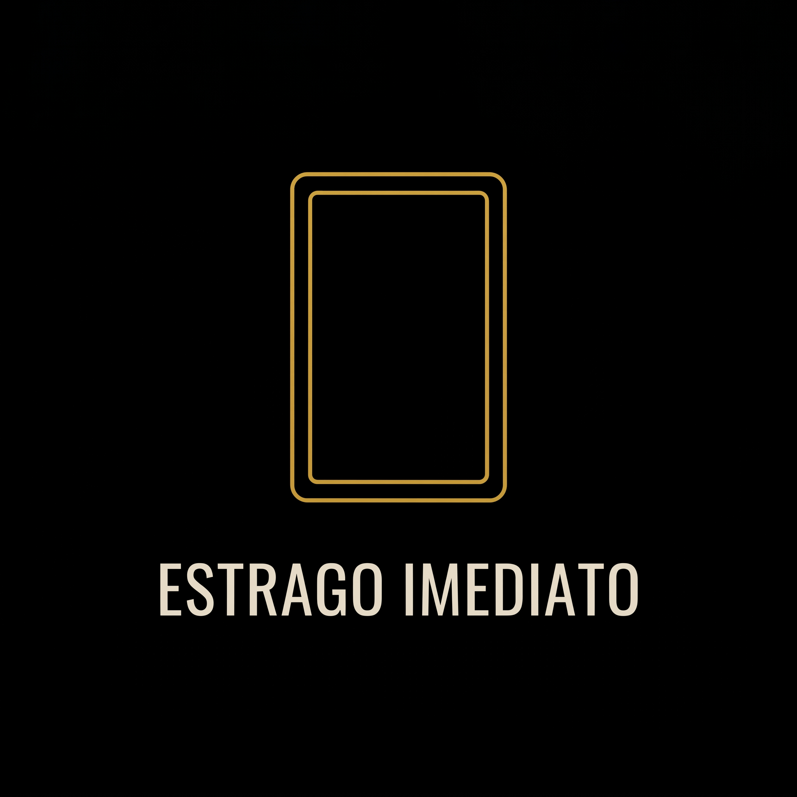
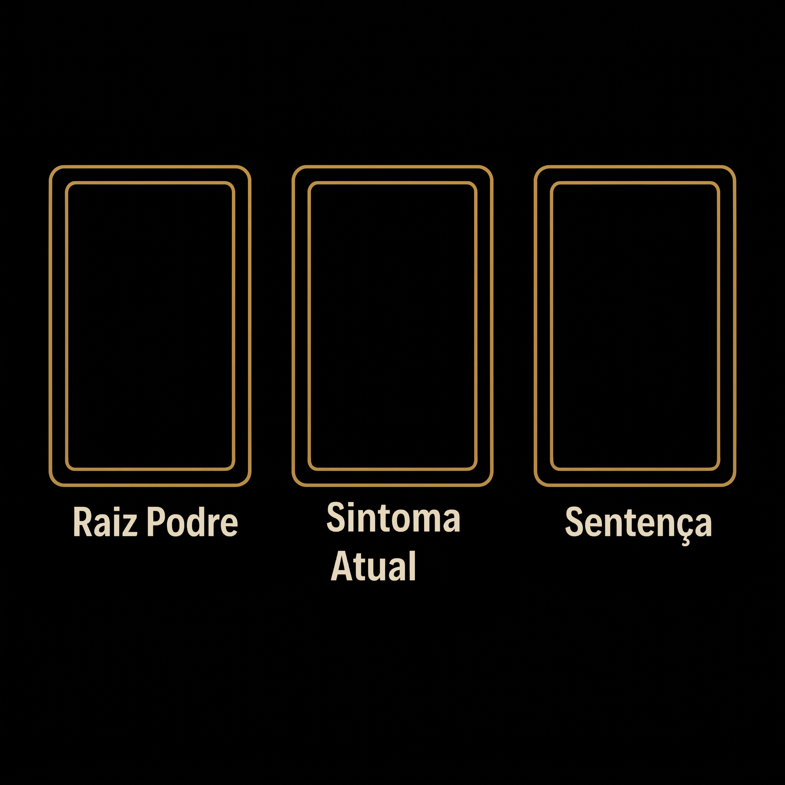
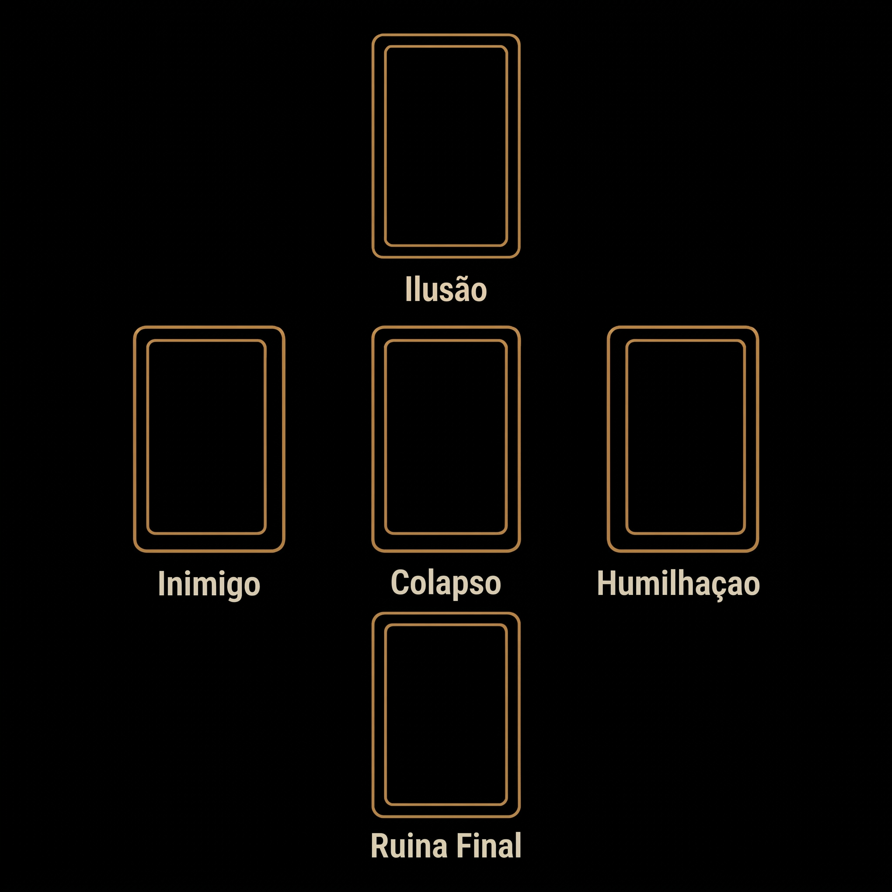

O Baralho das 36 Mortes Miúdas
Manual Reconstituído da Lei do Estrago Inevitável



Toque em uma lâmina para ampliar
Manual Reconstituído · 24 Páginas
Edição de campo reconstituída sob a premissa da Lei do Estrago Inevitável. Acesse o livreto em PDF ou abra a matriz no Google Docs.
Protocolo de Embaralhamento e Corte
Antes de cada tiragem, embaralhe as lâminas de olhos fechados, mentalizando com o alvo da má sorte. Em geral, qualquer pessoa envolvida com as cartas terá má sorte. A seguir, corte o maço firmemente com a mão esquerda em três montes equivalentes e reagrupe-os na ordem inversa, sem olhar a carta do fundo.
Métodos de Tiragem
Método I — O Golpe Seco (1 carta): o nível básico. Uma carta deve ser capaz de manifestar algum tipo de poderoso azar em um inimigo. Para perguntas de sim ou não, todas as 36 Mortes Miúdas significam NÃO.
Método II — A Triangulação do Prejuízo (3 cartas): disponha três em linha ou nos vértices do triângulo com o olho vigilante ao centro. A Carta 1 (A Raiz Podre) revela o erro que você já cometeu e não tem mais conserto; a Carta 2 (O Sintoma Atual) mostra quem ou o quê está sabotando você agora; a Carta 3 (A Sentença) confirma o desfecho inevitável e a fatura física ou material que restará para pagar.
Método III — A Cruz da Lei do Estrago (5 cartas): forme uma cruz colocando a Carta 1 no centro (o colapso principal em curso), a Carta 2 à esquerda (o inimigo oculto ou falso aliado), a Carta 3 à direita (a humilhação pública ou falha iminente), a Carta 4 acima (a ilusão que o consulente ainda alimenta) e a Carta 5 abaixo (o órgão afetado ou a ruína final que encerra o ciclo).
Nenhuma lâmina deste baralho é considerada segura. Consulte por sua conta e risco.
Ficha Técnica
Histórico
Em maio de 1945, durante as buscas nos escombros de Berlim, uma unidade especial da contrainteligência soviética apreendeu os cadernos técnicos de uma célula nazista independente dedicada ao estudo de sistemas oraculares e cartomancia desviante. Com o objetivo de atacar inimigos do regime à distância com forças etéreas, o alto escalão do Reich encomendou um baralho de trinta e seis lâminas regido exclusivamente pela chamada Lei do Estrago Inevitável — uma premissa segundo a qual todo processo caminha de forma inexorável para a deterioração, o desgaste e o colapso, sem qualquer possibilidade de reversão. Assim sendo, o baralho devia manifestar a pior sorte possível para o alvo designado.
Os cadernos recolhidos em Berlim foram transferidos sob sigilo para um depósito técnico da KGB em Moscou, onde permaneceram arquivados sem movimentação por mais de três décadas até serem reativados no início da década de 1980 por uma seção especial dedicada a métodos não convencionais de inteligência. A partir das especificações apreendidas, o departamento mandou executar as trinta e seis ilustrações em estilo de gravura antiga, carimbando o selo oficial da espada e do escudo no canto superior direito de cada lâmina e gravando no verso o emblema do triângulo cortado pelo olho vigilante — adotado como o Olho da Lei do Estrago, que tudo registra sem intervir.
Concluída a primeira tiragem física, o protocolo autorizou exatamente três sessões experimentais de leitura cruzada com analistas internos e operadores requisitados, mas o programa foi interrompido imediatamente após a terceira rodada: semanas depois, todos os envolvidos na manipulação do baralho morreram em episódios distintos e aparentemente banais que reproduziam, ponto a ponto, as lâminas sorteadas sobre a mesa. Lacrado novamente como ativo contaminado em arquivo morto, o maço só veio a público após o vazamento recente das matrizes gráficas que dão origem a esta edição.